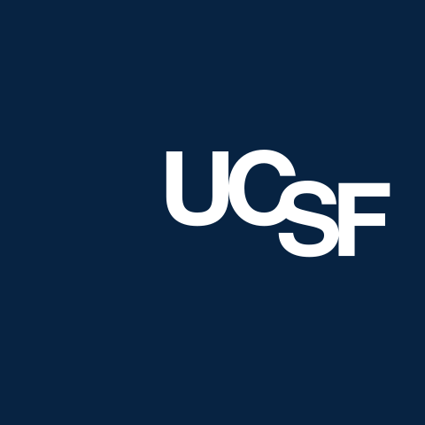
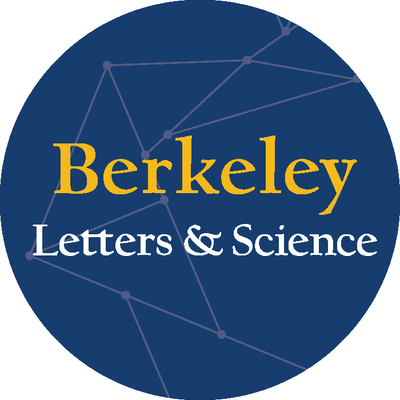
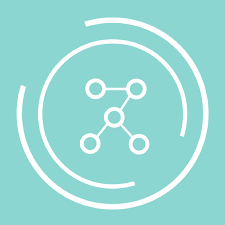

Timeline
A brief overview of my college career thus far
-

Fall 2024
Computational Neuroscience Researcher
Conducted research at UCSF to optimize seizure detection models for personalized clinical care
-
Summer 2024
Machine Learning Consultant
Built financial forecasting models using ARIMA and LSTMs at Universal Health Services
-

Dec. 2023 – May 2024
Data Science Researcher
Developed predictive models for alumni donation likelihood and forecasting at UC Berkeley College of Letters and Science
-

Spring 2024
Data Science DeCal Instructor
Facilitated the Data 198: Intro to Real World Data Science DeCal at UC Berkeley
-

Fall 2023
Full-Stack Developer
Developed and deployed a Django web app for the UC Berkeley Chinese Student Association
-

Fall 2023
Started Undergraduate Studies
Began B.A. in Computer Science and Cognitive Science at UC Berkeley